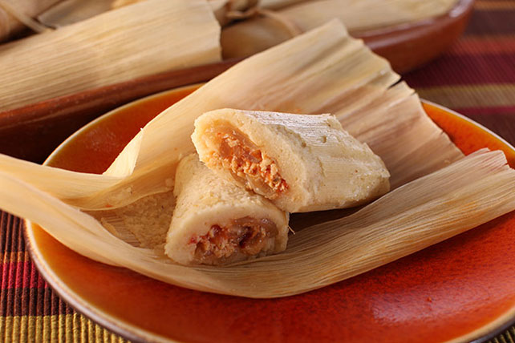
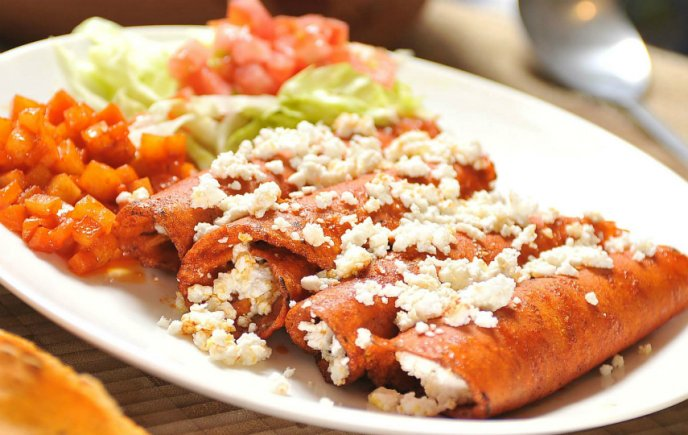

Hola bienvenidos al menu de platillos de mexico.
Platillo |
Imagen |
Informacion |
| 1-Tamales. |
 | Otro de los platos de comida mexicana más conocidos internacionalmente. En su versión más extendida se cocina envuelto en hora de maíz, aunque hay variantes regionales envueltas en hojas de plátano.Los tamales tienen variantes en varios países de América Latina.
|
 |
Si los habitantes de la Ciudad de México tuvieran que llevarse una sola comida a una isla desierta, muy probablemente sería ésta. Están influenciados por la cocina del Imperio Otomano, y mezclan carne marinada de puerco en trompo (sí, parecido al de shawarma) con tortilla de maíz, piña, cebolla, cilantro, y dosis al gusto de limón y salsa picante.
|
|
|
3-Enchiladas.
|
 | Las tortillas dobladas y rellenas, bañadas de alguna salsa, podrían reemplazar el centro de la bandera de México. Las más populares son las suizas (que no tienen nada de europeas), las rojas, las verdes (y mejor si son gratinadas).
|